Bootstrap Confidence Intervals
Overview
When fitting a partially specified model, point estimates of the unknown function and fitted trajectories are rarely sufficient — we also need uncertainty quantification. Bootstrap confidence intervals provide a distribution-free (or distribution-aware) approach to estimating the variability of both the fitted trajectories and the recovered unknown functions.
PartiallySpecifiedModels.jl implements two bootstrap methods:
| Method | Description | Assumptions |
|---|---|---|
:parametric | Simulate new data from the fitted likelihood (e.g., $N(\hat\mu, \hat\sigma)$ or $\text{Pois}(\hat\mu)$) | Correct likelihood family |
:nonparametric | Resample residuals with replacement per state (Gaussian likelihood only) | Exchangeable residuals |
This vignette demonstrates both methods on an SIR epidemic model with a nonparametric force of infection, compares the resulting confidence intervals, and shows how the parametric bootstrap adapts to non-Gaussian likelihoods.
Setup
using PartiallySpecifiedModels
using PartiallySpecifiedModels: solve, appraise
using OrdinaryDiffEq
using Plots
using Statistics
using Random
Random.seed!(7)TaskLocalRNG()The Model: SIR with Unknown Force of Infection
We consider an SIR epidemic model where the force of infection $\lambda(I/N)$ is unknown. The true transmission follows a power-law form:
\[\lambda(I/N) = \beta \left(\frac{I}{N}\right)^\alpha, \quad \beta = 0.5, \; \alpha = 0.9\]
This departs slightly from the standard mass-action $\lambda = \beta \cdot I/N$ ($\alpha = 1$), which makes the nonparametric recovery more interesting.
function sir_true!(du, u, p, t)
S, I, R = u
N = 1000.0
prev = I / N
λ = 0.5 * prev^0.9
du[1] = -λ * S
du[2] = λ * S - 0.25 * I
du[3] = 0.25 * I
endsir_true! (generic function with 1 method)Generate synthetic data
We simulate the true model and observe $I(t)$ daily with Gaussian noise ($\sigma = 5$):
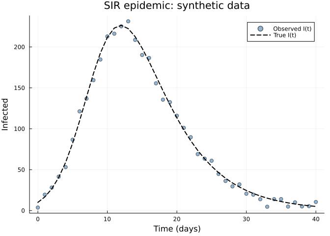
The prevalence range determines the B-spline domain:
Prevalence range: 0.005 – 0.2264
B-spline domain: (0.0, 0.272)Section 1: Fit the PSM
We model $\lambda(I/N)$ with a shape-constrained B-spline (8 knots, increasing with $\lambda(0) = 0$). The inc_zero_left constraint is biologically motivated: the force of infection must be zero when there are no infected individuals, and should increase with prevalence.
function sir_psm!(du, u, p, t)
S, I, R = u
λ = p.λ(I / p.N)
du[1] = -λ * S
du[2] = λ * S - p.γ * I
du[3] = p.γ * I
endsir_psm! (generic function with 1 method)approx_λ = ShapeConstrainedBSplineApproximator(:λ, foi_domain, 10,
:inc_zero_left; initial = 0.4)
prob = PSMProblem(
sir_psm!, u0, tspan, [approx_λ];
data_times = data_times,
data_values = reshape(I_obs, :, 1),
obs_to_state = [2],
known_params = (γ = 0.25, N = N_pop),
likelihood = Gaussian(),
solver = Tsit5()
)
sol = solve(prob, LAML(maxiters=100, verbose=false))PSMSolution((λ = [-3.45086987187037, -3.5590800001531555, -3.776745644809874, -3.9139171378768194, -3.9088832232901427, -3.810723066753041, -3.7526301890183067, -3.7461198748320514, -3.746119874832085]), 578.252069802269, 1100.247928172555, 2.9457915395495182, [618.3244258309926], [10.0; 16.28419252460118; … ; 5.942001953673361; 5.048532466532654;;], [3.6696475510497084; 19.43055459411786; … ; 5.397424420239466; 10.498804562183398;;], [0.0, 1.0, 2.0, 3.0, 4.0, 5.0, 6.0, 7.0, 8.0, 9.0 … 31.0, 32.0, 33.0, 34.0, 35.0, 36.0, 37.0, 38.0, 39.0, 40.0], Dict{Symbol, Any}(:λ => PartiallySpecifiedModels.var"#evaluator#build_constrained_bspline_evaluator##0"{Float64, Float64, Float64, Float64, Float64, Float64, Float64, Int64, Vector{Float64}, Vector{Float64}}(0.030699072154072155, 0.18997220033088916, 0.030699072154072155, 0.6005276476099307, 0.7629588781235168, 0.272, 0.0, 4, [-0.11657142857142856, -0.07771428571428571, -0.038857142857142854, 0.0, 0.038857142857142854, 0.07771428571428571, 0.11657142857142858, 0.15542857142857142, 0.19428571428571428, 0.23314285714285715, 0.272, 0.3108571428571429, 0.34971428571428576, 0.38857142857142857], [0.0, 0.03122540661579102, 0.05929280646126886, 0.08193168774084054, 0.10169720964839091, 0.12156149614981404, 0.1434523045535392, 0.1666374116863691, 0.1899722003308893, 0.2133069889754087])), (V_beta = [0.0007556743664625579 -0.0002575223955511279 … 9.83049099046831e-7 9.8304909859538e-7; -0.0002575223955511279 0.00012760678907892655 … 3.175980186402274e-5 3.1759801849437514e-5; … ; 9.83049099046831e-7 3.175980186402274e-5 … 0.0025469067979421093 0.00254690679677248; 9.8304909859538e-7 3.1759801849437514e-5 … 0.00254690679677248 0.0041641807666202854], sigma2 = 28.912647843300597, converged = true, iterations = 30, reason = :converged_tol, laml_failures = 0, criterion = :working, laml = -76.8796659248735, stationarity = 7.328560594377365e-6, smoothing_advanced = true, smoothing_fixed = false, solver = :LAML, smoothing_state = (beta = [-3.45086987187037, -3.5590800001531555, -3.776745644809874, -3.9139171378768194, -3.9088832232901427, -3.810723066753041, -3.7526301890183067, -3.7461198748320514, -3.746119874832085], lambda = [618.3244258309926], penalties = [[1.0 -1.0 … 0.0 0.0; -1.0 2.0 … 0.0 0.0; … ; 0.0 0.0 … 2.0 -1.0; 0.0 0.0 … -1.0 1.0]], offsets = [0], sizes = [9], ranks = [8], information = [31863.72363216708 94018.67227897473 … 21.89240069534512 0.0; 94018.67227897473 282719.7646377686 … 207.77206649731897 0.0; … ; 21.89240069534512 207.77206649731897 … 7.451138842176928 0.0; 0.0 0.0 … 0.0 0.0], rss = 1100.247928172555, residual_dof = 40, covariance_ridge = 2.8395641448943064e-7, coefficient_score = [0.06933260787384654, 0.06357163108967256, 0.03974704686022079, 0.0037192638921936805, 0.002344448212078021, -0.0005599041472308386, -0.00045980294741454486, -6.648413851806367e-5, -2.073931249901253e-11], names = (:λ,), data_weights = [1.0; 1.0; … ; 1.0; 1.0;;], jac = :fd), ridge = false, final_parameter_step = 3.3233721626792593e-6))
Data loss (SS): 1100.2
EDF: 2.95
Smoothing λ: [618.3]Fitted trajectory
plot(data_times, I_true, label="True I(t)", lw=2, color=:black, ls=:dash,
xlabel="Time (days)", ylabel="Infected",
title="PSM fit: SIR with unknown λ(I/N)")
scatter!(data_times, I_obs, label="Observed", ms=4, alpha=0.5, color=:steelblue)
plot!(data_times, sol.fitted_values[:, 1], label="PSM fit", lw=2, color=:red)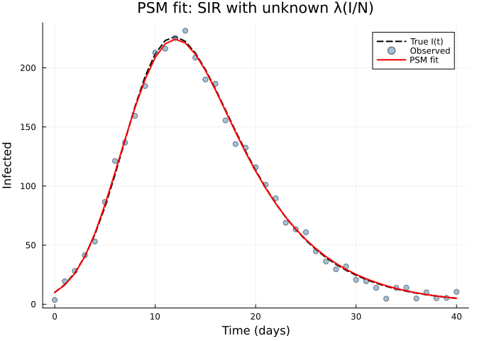
Recovered unknown function
prev_grid = range(0.005, 0.14, length=100)
λ_true = [0.5 * p^0.9 for p in prev_grid]
λ_est = [sol.unknown_functions[:λ](p) for p in prev_grid]
plot(prev_grid, λ_true, label="True λ(I/N)", lw=2, color=:black, ls=:dash,
xlabel="Prevalence (I/N)", ylabel="Force of infection λ",
title="Recovered unknown function")
plot!(prev_grid, λ_est, label="Estimated λ(I/N)", lw=2, color=:red)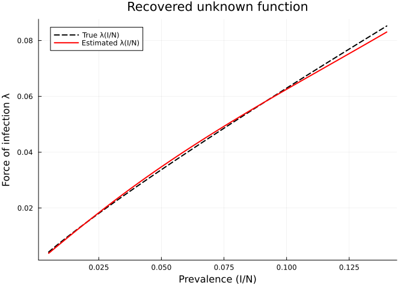
Section 2: Parametric Bootstrap
The parametric bootstrap generates pseudo-data by sampling from the fitted likelihood:
\[I^*_t \sim N\bigl(\hat{I}(t),\; \hat\sigma^2\bigr)\]
Each replicate is refit with LAML, producing a distribution of fitted trajectories and unknown function curves. Pointwise quantiles give the confidence intervals.
bs_param = bootstrap(sol, prob, LAML(maxiters=80, verbose=false);
nboot=50, method=:parametric, rng=Random.Xoshiro(42), verbose=true)Bootstrap replicate 1 / 50
Bootstrap replicate 2 / 50
Bootstrap replicate 3 / 50
Bootstrap replicate 50 / 50
Bootstrap complete: 50 / 50 successful
┌ Warning: bootstrap: of 50 successful replicate fits, 1 never advanced smoothing selection (λ̂ left at its initialization) and 0 converged on a flat ridge (parameters unpinned). Their intervals inherit that. See `n_smoothing_stalled` / `n_ridge` on the result.
└ @ PartiallySpecifiedModels ~/Projects/psm/PartiallySpecifiedModels.jl/src/bootstrap.jl:542
BootstrapResult([-3.535464411865651 -3.568632298281304 … -3.8691755988200303 -3.8691755988200565; -3.4843450086689987 -3.5522368087577143 … -3.856734874212451 -3.8567348742124814; … ; -3.4913609811887856 -3.5582029376226805 … -3.8766950855485183 -3.8766950855485494; -3.513761369176599 -3.539372212875265 … -3.7740810292933467 -3.7740810292933764], [10.0; 15.872558820323219; … ; 5.7621635180733515; 4.875324357611146;;; 10.0; 16.190986219572522; … ; 5.8813421419961465; 4.990458629293042;;; 10.0; 15.911401943321225; … ; 5.726179736631645; 4.848005809747907;;; … ;;; 10.0; 16.071372549867878; … ; 6.167822786632521; 5.2346732395001565;;; 10.0; 16.117825022057392; … ; 5.934304859846592; 5.035711792604293;;; 10.0; 16.16082000188026; … ; 5.749143134509523; 4.871337370373407], Dict(:λ => [0.0 0.0 … 0.0 0.0; 0.0019961608721125283 0.0020620529913286667 … 0.002048940042670252 0.0020472694831551765; … ; 0.15255710486506738 0.15337243429052994 … 0.15259054984186515 0.15681095308247497; 0.15401795260901482 0.15485138807675394 … 0.1540405783353566 0.15841589877224935]), Dict(:λ => [0.0, 0.0027474747474747476, 0.005494949494949495, 0.008242424242424242, 0.01098989898989899, 0.013737373737373737, 0.016484848484848484, 0.019232323232323233, 0.02197979797979798, 0.024727272727272726 … 0.24727272727272728, 0.25002020202020203, 0.25276767676767675, 0.25551515151515153, 0.25826262626262625, 0.261010101010101, 0.26375757575757575, 0.2665050505050505, 0.26925252525252524, 0.272]), (lower = [10.0; 15.690802453037303; … ; 5.4585906421982795; 4.614850158554507;;], upper = [10.0; 16.785628326428498; … ; 6.318788305336862; 5.407875069944184;;]), Dict(:λ => (lower = [0.0, 0.001961256520263376, 0.003919327481218855, 0.005872592027373041, 0.007817055343833158, 0.009774473319805422, 0.011713075017179494, 0.013642773488720427, 0.015558422008492199, 0.01746391224791975 … 0.13659059540499952, 0.13788966743792924, 0.1391886085393856, 0.14048743507580289, 0.14178616341361513, 0.14308480991925657, 0.14438339095916133, 0.1456819228997636, 0.14698042210749748, 0.14827890494879725], upper = [0.0, 0.0021912904575595855, 0.0043572522100479225, 0.006496634204326102, 0.008608185387255246, 0.010690654705696457, 0.012742791106510817, 0.014763343536559469, 0.016751060942703504, 0.018704692271804005 … 0.16481329781621729, 0.16789486822204183, 0.17098837532420827, 0.17409232703567407, 0.1772052312693963, 0.18032559593833228, 0.18345192895543927, 0.18658273823367452, 0.1897165316859952, 0.1928518172253587])), 0.95, 50, Dict{Symbol, Matrix{Float64}}(), Dict(:λ => [50, 50, 50, 50, 50, 50, 50, 50, 50, 50 … 50, 50, 50, 50, 50, 50, 50, 50, 50, 50]), 1, 0)Trajectory confidence intervals
plot(data_times, I_true, label="True I(t)", lw=2, color=:black, ls=:dash,
xlabel="Time (days)", ylabel="Infected",
title="Parametric bootstrap: trajectory CI")
scatter!(data_times, I_obs, label="Observed", ms=3, alpha=0.4, color=:steelblue)
plot!(data_times, sol.fitted_values[:, 1], label="PSM fit", lw=2, color=:red)
plot!(data_times, bs_param.ci_fitted.lower[:, 1],
fillrange=bs_param.ci_fitted.upper[:, 1],
fillalpha=0.2, color=:red, label="95% CI", ls=:dot, lw=0)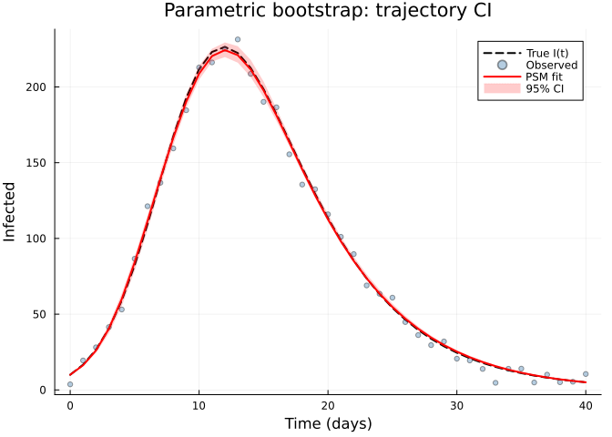
Unknown function confidence intervals
uf_grid = bs_param.uf_grid[:λ]
plot(prev_grid, λ_true, label="True λ(I/N)", lw=2, color=:black, ls=:dash,
xlabel="Prevalence (I/N)", ylabel="Force of infection λ",
title="Parametric bootstrap: unknown function CI")
plot!(uf_grid, bs_param.ci_uf[:λ].lower,
fillrange=bs_param.ci_uf[:λ].upper,
fillalpha=0.2, color=:red, label="95% CI", ls=:dot, lw=0)
plot!(prev_grid, λ_est, label="Estimated λ(I/N)", lw=2, color=:red)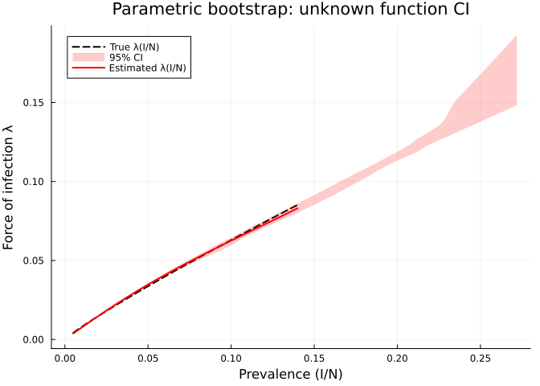
Parametric bootstrap: 50 / 50 replicates succeeded
stalled smoothing selection: 1, flat-ridge exits: 0The two extra counts come from the per-replicate convergence diagnostics. n_smoothing_stalled is the number of successful replicates whose smoothing parameter never left its initial value (the fit converged before Fellner–Schall could act on it); n_ridge is the number whose objective converged while the coefficients could still move along a flat ridge (convergence.ridge). Both are usable draws at the level of the fitted function — which is all the bands here use — and the package summarises them in one aggregate warning instead of a warning per replicate.
Section 3: Nonparametric Bootstrap
The nonparametric bootstrap resamples the residuals $\hat{e}_t = I_t - \hat{I}(t)$ with replacement and adds them to the fitted values to create pseudo-data:
\[I^*_t = \hat{I}(t) + \hat{e}_{\pi(t)}\]
where $\pi$ is a random permutation with replacement. This makes no assumption about the error distribution — only that residuals are exchangeable.
bs_nonparam = bootstrap(sol, prob, LAML(maxiters=80, verbose=false);
nboot=50, method=:nonparametric, rng=Random.Xoshiro(42), verbose=true)Bootstrap replicate 1 / 50
Bootstrap replicate 2 / 50
Bootstrap replicate 3 / 50
Bootstrap replicate 50 / 50
Bootstrap complete: 50 / 50 successful
BootstrapResult([-3.498079322952476 -3.5314643158018524 … -3.6727337234645927 -3.6727337234646193; -3.439369624206503 -3.548618756456639 … -3.8705284896179175 -3.8705284896179397; … ; -3.5101804420126 -3.551005340989311 … -3.6957179698504783 -3.6957179698504836; -3.5325409527099865 -3.5820401537147326 … -4.009774089696064 -4.009774089696096], [10.0; 16.276908315329322; … ; 6.112060436967449; 5.196049621084998;;; 10.0; 16.40740843375655; … ; 5.681076405425421; 4.820687710787915;;; 10.0; 15.962868726162187; … ; 6.172450438853158; 5.239692391799558;;; … ;;; 10.0; 15.710835379135142; … ; 5.629930246287844; 4.753402417240669;;; 10.0; 16.091547392779333; … ; 5.6418668296460694; 4.776154283684402;;; 10.0; 15.79567291174656; … ; 5.560516026811775; 4.695837670003403], Dict(:λ => [0.0 0.0 … 0.0 0.0; 0.002070709754353136 0.0021108441636684717 … 0.0020383606123487857 0.001985127308883127; … ; 0.1600911247079998 0.15451025546416047 … 0.16066080463329846 0.14887984733601353; 0.1618651190726103 0.1559691670437505 … 0.16239497562598476 0.1501508087630689]), Dict(:λ => [0.0, 0.0027474747474747476, 0.005494949494949495, 0.008242424242424242, 0.01098989898989899, 0.013737373737373737, 0.016484848484848484, 0.019232323232323233, 0.02197979797979798, 0.024727272727272726 … 0.24727272727272728, 0.25002020202020203, 0.25276767676767675, 0.25551515151515153, 0.25826262626262625, 0.261010101010101, 0.26375757575757575, 0.2665050505050505, 0.26925252525252524, 0.272]), (lower = [10.0; 15.797770054796286; … ; 5.576134226193891; 4.708789738131788;;], upper = [10.0; 16.727551848322342; … ; 6.273113128466479; 5.347402937006574;;]), Dict(:λ => (lower = [0.0, 0.0019844966604950593, 0.0039627419840885, 0.005932974529223813, 0.0078948566075141, 0.009847847289993685, 0.011791344568611396, 0.013724746435316142, 0.01564745088205677, 0.017558855900782128 … 0.13824778688654116, 0.1396199573311912, 0.14098012153930678, 0.1423245305351297, 0.14366885268345897, 0.14501310245887697, 0.14634348082609439, 0.14763574047086114, 0.14892795813011833, 0.1502201547966208], upper = [0.0, 0.002183987594150291, 0.004340957655417754, 0.006470005347352583, 0.008570225833504985, 0.01064071427742518, 0.01268056584266336, 0.014688875692769755, 0.01666908504855763, 0.01862161382861495 … 0.15124347548649958, 0.15334915675534985, 0.15545580070170983, 0.15756328699089087, 0.15967149528820407, 0.16178030525896092, 0.16388959656847263, 0.16599924888205042, 0.16810914186500564, 0.17021915518264957])), 0.95, 50, Dict{Symbol, Matrix{Float64}}(), Dict(:λ => [50, 50, 50, 50, 50, 50, 50, 50, 50, 50 … 50, 50, 50, 50, 50, 50, 50, 50, 50, 50]), 0, 0)Trajectory confidence intervals
plot(data_times, I_true, label="True I(t)", lw=2, color=:black, ls=:dash,
xlabel="Time (days)", ylabel="Infected",
title="Nonparametric bootstrap: trajectory CI")
scatter!(data_times, I_obs, label="Observed", ms=3, alpha=0.4, color=:steelblue)
plot!(data_times, sol.fitted_values[:, 1], label="PSM fit", lw=2, color=:red)
plot!(data_times, bs_nonparam.ci_fitted.lower[:, 1],
fillrange=bs_nonparam.ci_fitted.upper[:, 1],
fillalpha=0.2, color=:blue, label="95% CI", ls=:dot, lw=0)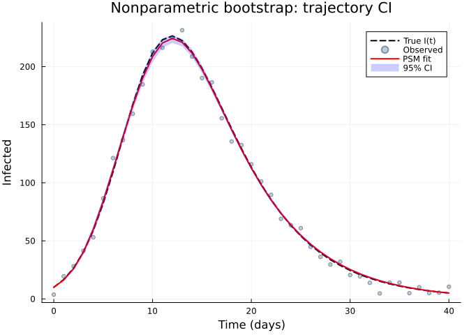
Unknown function confidence intervals
plot(prev_grid, λ_true, label="True λ(I/N)", lw=2, color=:black, ls=:dash,
xlabel="Prevalence (I/N)", ylabel="Force of infection λ",
title="Nonparametric bootstrap: unknown function CI")
plot!(bs_nonparam.uf_grid[:λ], bs_nonparam.ci_uf[:λ].lower,
fillrange=bs_nonparam.ci_uf[:λ].upper,
fillalpha=0.2, color=:blue, label="95% CI", ls=:dot, lw=0)
plot!(prev_grid, λ_est, label="Estimated λ(I/N)", lw=2, color=:red)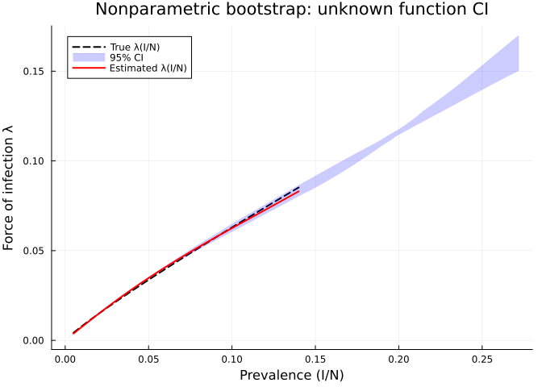
Nonparametric bootstrap: 50 / 50 replicates succeededSection 4: Case Bootstrap
[!WARNING]
Case bootstrap has been removed
The case bootstrap resamples entire observation rows with replacement. For time series data from ODE models, this scrambles the temporal structure — a resampled dataset might place the peak observation at an early time point. This produces unreliable CIs and high failure rates. Case resampling is designed for cross-sectional (i.i.d.) data, not time-ordered dynamical systems. For this reason
method=:casehas been removed from the package (requesting it raises an error).For ODE-based PSMs, use parametric or nonparametric bootstrap instead.
Section 5: Comparison of Bootstrap Methods
Side-by-side trajectory CIs
p_traj = plot(data_times, I_true, label="True", lw=2, color=:black, ls=:dash,
xlabel="Time (days)", ylabel="Infected",
title="Trajectory CI comparison", legend=:topright)
scatter!(p_traj, data_times, I_obs, label="Data", ms=2, alpha=0.3, color=:gray)
plot!(p_traj, data_times, bs_param.ci_fitted.lower[:, 1],
fillrange=bs_param.ci_fitted.upper[:, 1],
fillalpha=0.2, color=:red, label="Parametric", ls=:dot, lw=0)
plot!(p_traj, data_times, bs_nonparam.ci_fitted.lower[:, 1],
fillrange=bs_nonparam.ci_fitted.upper[:, 1],
fillalpha=0.2, color=:blue, label="Nonparametric", ls=:dot, lw=0)
plot!(p_traj, data_times, sol.fitted_values[:, 1], label="Fit", lw=2, color=:red)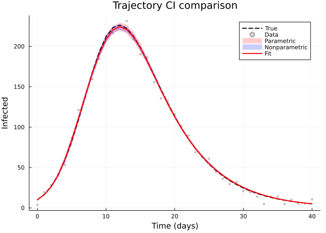
Side-by-side unknown function CIs
p_uf = plot(prev_grid, λ_true, label="True λ", lw=2, color=:black, ls=:dash,
xlabel="Prevalence (I/N)", ylabel="λ(I/N)",
title="Unknown function CI comparison", legend=:topleft)
plot!(p_uf, bs_param.uf_grid[:λ], bs_param.ci_uf[:λ].lower,
fillrange=bs_param.ci_uf[:λ].upper,
fillalpha=0.2, color=:red, label="Parametric", ls=:dot, lw=0)
plot!(p_uf, bs_nonparam.uf_grid[:λ], bs_nonparam.ci_uf[:λ].lower,
fillrange=bs_nonparam.ci_uf[:λ].upper,
fillalpha=0.2, color=:blue, label="Nonparametric", ls=:dot, lw=0)
plot!(p_uf, prev_grid, λ_est, label="Fit", lw=2, color=:red)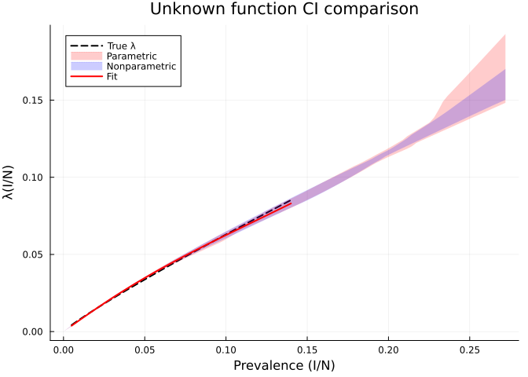
Quantitative comparison
Method | n_success | CI width at peak | Mean UF CI width | UF coverage
-------------------------------------------------------------------------------------
Parametric | 50/50 | 9.6 | 0.00858 | 87.0%
Nonparametric | 50/50 | 6.8 | 0.0055 | 82.0%Interpretation:
- Parametric CIs tend to be narrower because they assume the correct error model.
- Nonparametric CIs are slightly wider because resampled residuals capture any non-Gaussian features.
[!IMPORTANT]
Bootstrap coverage and smoothing bias
The bootstrap CIs may show less than nominal coverage (e.g., 70% instead of 95%) for the unknown function $\lambda(I/N)$. This is a well-known limitation: the smoothing penalty introduces bias in the estimated function (pulling it towards linearity), and the bootstrap only captures sampling variability around the biased estimate — not the bias itself.
This is analogous to the bias–variance tradeoff in kernel smoothing and GAMs (Nychka 1988, Wood 2006 §6.10). Two approaches give better coverage:
- Bayesian credible intervals from the LAML posterior covariance (see Vignette 14: MCMC) — these account for smoothing uncertainty by design.
- Undersmoothing — using more knots or smaller λ reduces bias at the cost of wider CIs.
For trajectory CIs (fitted values at observed times), bootstrap coverage is typically much closer to nominal because the ODE integration integrates out local bias in the unknown function.
Section 6: Bootstrap with Non-Gaussian Likelihoods
A key advantage of the parametric bootstrap is that it respects the likelihood family. When fitting count data with Poisson(), the parametric bootstrap samples $I^*_t \sim \text{Pois}(\hat{I}(t))$ instead of adding Gaussian noise. This naturally produces integer pseudo-data with variance proportional to the mean.
Generate Poisson data
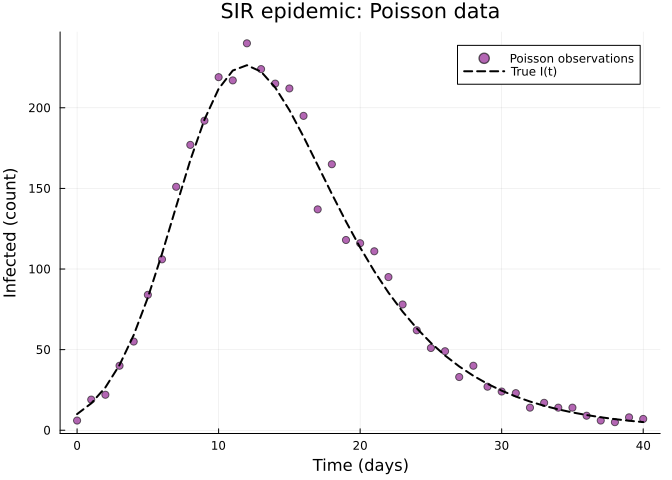
Fit with Poisson likelihood
prob_pois = PSMProblem(
sir_psm!, u0, tspan,
[ShapeConstrainedBSplineApproximator(:λ, foi_domain, 10, :inc_zero_left; initial = 0.4)];
data_times = data_times,
data_values = reshape(I_pois, :, 1),
obs_to_state = [2],
known_params = (γ = 0.25, N = N_pop),
likelihood = Poisson(),
solver = Tsit5()
)
sol_pois = solve(prob_pois, LAML(maxiters=100, verbose=false))PSMSolution((λ = [-3.539670311718978, -3.5790418177529406, -3.6909579556194654, -3.79487015135601, -3.876295478753649, -3.9158724977268453, -3.923319757337993, -3.9235275969843086, -3.9235275969843486]), 1213.4339429791319, 2425.5318517878595, 2.336034135933939, [40.33309355125397], [10.0; 15.788725855137608; … ; 5.413256691185107; 4.566332058829193;;], [6.0; 19.0; … ; 8.0; 7.0;;], [0.0, 1.0, 2.0, 3.0, 4.0, 5.0, 6.0, 7.0, 8.0, 9.0 … 31.0, 32.0, 33.0, 34.0, 35.0, 36.0, 37.0, 38.0, 39.0, 40.0], Dict{Symbol, Any}(:λ => PartiallySpecifiedModels.var"#evaluator#build_constrained_bspline_evaluator##0"{Float64, Float64, Float64, Float64, Float64, Float64, Float64, Int64, Vector{Float64}, Vector{Float64}}(0.028428128064472286, 0.18241218759143904, 0.028428128064472286, 0.50385368220878, 0.722260334653871, 0.272, 0.0, 4, [-0.11657142857142856, -0.07771428571428571, -0.038857142857142854, 0.0, 0.038857142857142854, 0.07771428571428571, 0.11657142857142858, 0.15542857142857142, 0.19428571428571428, 0.23314285714285715, 0.272, 0.3108571428571429, 0.34971428571428576, 0.38857142857142857], [0.0, 0.028609705402366396, 0.056129946777368135, 0.08077191557519181, 0.10300866170596777, 0.1235242391830146, 0.14325152849427292, 0.1628338730357438, 0.18241218759143918, 0.2019905021471338])), (V_beta = [0.013463170131840094 -0.0035348877910595117 … 0.002145065015584004 0.0021450650154445946; -0.0035348877910595117 0.0021383825630116823 … 0.0008468369389879568 0.0008468369389329204; … ; 0.002145065015584004 0.0008468369389879568 … 0.05389645455851519 0.05389645455501242; 0.0021450650154445946 0.0008468369389329204 … 0.05389645455501242 0.07868999037747455], sigma2 = 1.0, converged = true, iterations = 27, reason = :converged_tol, laml_failures = 0, criterion = :working, laml = -136.01085844400095, stationarity = 1.8399252121881204e-9, smoothing_advanced = true, smoothing_fixed = false, solver = :LAML, smoothing_state = nothing, ridge = false, final_parameter_step = 2.1530171191492474e-8))
Poisson fit — data_loss: 2425.5, EDF: 2.34Parametric bootstrap with Poisson likelihood
The parametric bootstrap now samples from $\text{Pois}(\hat\mu_t)$:
bs_pois = bootstrap(sol_pois, prob_pois, LAML(maxiters=80, verbose=false);
nboot=50, method=:parametric, rng=Random.Xoshiro(42), verbose=true)Bootstrap replicate 1 / 50
Bootstrap replicate 2 / 50
Bootstrap replicate 3 / 50
Bootstrap replicate 50 / 50
Bootstrap complete: 50 / 50 successful
BootstrapResult([-3.530546937708677 -3.572493195199869 … -3.956354859616317 -3.9563548596163347; -3.53769154143719 -3.583249676297883 … -3.8714488859062057 -3.871448885906231; … ; -3.562951218167586 -3.596190559982144 … -3.8297387989384073 -3.8297387983284734; -3.5150581351888595 -3.5687849770205164 … -4.0469015406026125 -4.0469015406026365], [10.0; 15.866736251171137; … ; 5.568581043715163; 4.704883199484507;;; 10.0; 15.765455294948087; … ; 5.313289926361117; 4.478965757028565;;; 10.0; 15.404857255125743; … ; 5.374873347329702; 4.513036849664691;;; … ;;; 10.0; 15.407559443805564; … ; 4.9935039578872695; 4.1898619761759575;;; 10.0; 15.582128873856417; … ; 5.038526010446541; 4.233870167417091;;; 10.0; 15.955203137131129; … ; 6.1088419122662225; 5.182630457985875], Dict(:λ => [0.0 0.0 … 0.0 0.0; 0.0019967749348285303 0.0019790776706055738 … 0.0019427632150086464 0.002015221020024105; … ; 0.15076543151722868 0.1555878426886772 … 0.15898585278533453 0.14445684878195983; 0.15210547469393784 0.15704541668475352 … 0.16050484305401003 0.14568188501852028]), Dict(:λ => [0.0, 0.0027474747474747476, 0.005494949494949495, 0.008242424242424242, 0.01098989898989899, 0.013737373737373737, 0.016484848484848484, 0.019232323232323233, 0.02197979797979798, 0.024727272727272726 … 0.24727272727272728, 0.25002020202020203, 0.25276767676767675, 0.25551515151515153, 0.25826262626262625, 0.261010101010101, 0.26375757575757575, 0.2665050505050505, 0.26925252525252524, 0.272]), (lower = [10.0; 15.240848167745565; … ; 4.663793176309651; 3.9063569181487425;;], upper = [10.0; 16.083999693647733; … ; 6.101508427958543; 5.1777805092566105;;]), Dict(:λ => (lower = [0.0, 0.0018635528959103334, 0.0037324267508494465, 0.005606728198826708, 0.007481520485721618, 0.009354158795435972, 0.011227281210853025, 0.013095668710412137, 0.014957421651414556, 0.01681567264223293 … 0.13276510057612442, 0.13381139969565303, 0.13489186020937335, 0.13608901749571403, 0.13728612781634958, 0.13848319899889747, 0.13968023887097528, 0.1408772552602005, 0.1420742559941907, 0.14327124890056336], upper = [0.0, 0.002045218928324183, 0.00407825947012797, 0.006098264275984441, 0.008104375996466687, 0.010101076045070578, 0.012156749713606007, 0.014171268951873312, 0.016100968078782234, 0.018003995548217824 … 0.1539005487421016, 0.15582440740386524, 0.1577491077500333, 0.15967454457007907, 0.16160061265347558, 0.16352720678969615, 0.16545422176821395, 0.16738155237850222, 0.169309093410034, 0.17123673965228267])), 0.95, 50, Dict{Symbol, Matrix{Float64}}(), Dict(:λ => [50, 50, 50, 50, 50, 50, 50, 50, 50, 50 … 50, 50, 50, 50, 50, 50, 50, 50, 50, 50]), 0, 0)p1 = plot(data_times, I_true, label="True I(t)", lw=2, color=:black, ls=:dash,
xlabel="Time (days)", ylabel="Infected (count)",
title="Poisson bootstrap: trajectory CI")
scatter!(p1, data_times, I_pois, label="Data", ms=3, alpha=0.4, color=:purple)
plot!(p1, data_times, sol_pois.fitted_values[:, 1], label="PSM fit", lw=2, color=:purple)
plot!(p1, data_times, bs_pois.ci_fitted.lower[:, 1],
fillrange=bs_pois.ci_fitted.upper[:, 1],
fillalpha=0.2, color=:purple, label="95% CI", ls=:dot, lw=0)
p2 = plot(prev_grid, λ_true, label="True λ", lw=2, color=:black, ls=:dash,
xlabel="Prevalence (I/N)", ylabel="λ(I/N)",
title="Poisson bootstrap: unknown function CI")
plot!(p2, bs_pois.uf_grid[:λ], bs_pois.ci_uf[:λ].lower,
fillrange=bs_pois.ci_uf[:λ].upper,
fillalpha=0.2, color=:purple, label="95% CI", ls=:dot, lw=0)
λ_pois_est = [sol_pois.unknown_functions[:λ](p) for p in prev_grid]
plot!(p2, prev_grid, λ_pois_est, label="Estimated λ", lw=2, color=:purple)
plot(p1, p2, layout=(1, 2), size=(900, 400))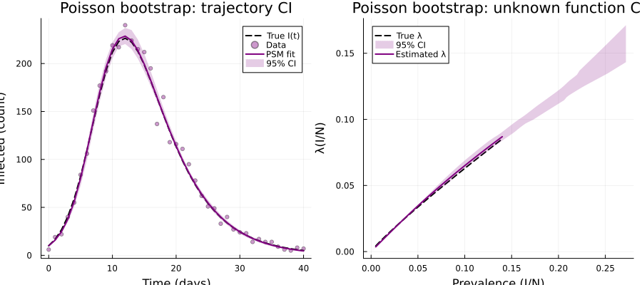
Note how the Poisson CIs are narrower near zero (where counts are small and Poisson variance is low) and wider at the peak (where counts — and hence Poisson variance — are large). This heteroscedasticity is automatically captured by the parametric bootstrap.
Section 7: Diagnostic Plots
Standard 4-panel diagnostics for the primary Gaussian fit help verify that the residuals are well-behaved:
diag = appraise(sol)
p_qq = scatter(diag.qq_theoretical, diag.qq_sample,
xlabel="Theoretical quantiles", ylabel="Sample quantiles",
title="QQ Plot of Residuals", ms=3, legend=false, color=:steelblue)
mn, mx = extrema(vcat(diag.qq_theoretical, diag.qq_sample))
plot!(p_qq, [mn, mx], [mn, mx], color=:red, ls=:dash, label="")
p_rf = scatter(diag.fitted, diag.residuals,
xlabel="Fitted values", ylabel="Residuals",
title="Residuals vs Fitted", ms=3, legend=false, color=:steelblue)
hline!(p_rf, [0], color=:gray, ls=:dot)
p_hist = histogram(diag.residuals, normalize=:pdf,
xlabel="Residuals", ylabel="Density",
title="Histogram of Residuals", legend=false, color=:steelblue, alpha=0.7)
p_of = scatter(diag.observed, diag.fitted,
xlabel="Observed", ylabel="Fitted",
title="Observed vs Fitted", ms=3, legend=false, color=:steelblue)
mn2, mx2 = extrema(vcat(diag.observed, diag.fitted))
plot!(p_of, [mn2, mx2], [mn2, mx2], color=:red, ls=:dash, label="")
plot(p_qq, p_rf, p_hist, p_of, layout=(2, 2), size=(700, 600))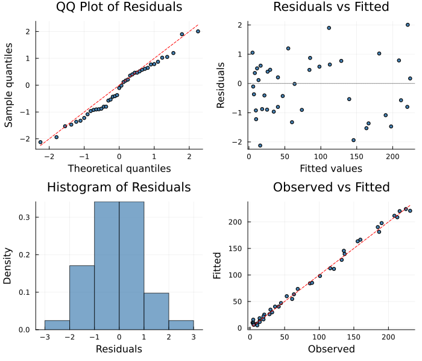
Durbin-Watson: 1.971A Durbin-Watson statistic near 2 indicates no strong autocorrelation in the residuals, supporting the validity of the bootstrap CIs (which assume approximately independent errors).
[!TIP]
See Also
- Vignette 14: MCMC — Bayesian credible intervals via NUTS sampling
- Vignette 24: Variational — approximate Bayesian posterior intervals
- Vignette 27: Predator–Prey Functional Response — bootstrap CIs on a shape-constrained functional response
- Vignette 28: Fisheries — Poisson parametric bootstrap on count data
Practical Guidance
Choosing a bootstrap method
| Scenario | Recommended method |
|---|---|
| Gaussian noise, well-specified model | :parametric — narrowest CIs |
| Count data (Poisson, NegBin) | :parametric — respects variance–mean relationship |
| Suspect non-Gaussian errors | :nonparametric — no distributional assumption |
| Quick exploratory analysis | :parametric with nboot=50 |
[!NOTE]
The
:casebootstrap (resampling entire rows) has been removed because it scrambles the temporal structure of ODE/DDE data; the:nonparametricmethod requires a Gaussian likelihood.
Tips
- Start with
nboot=50–100to check the method works, then increase to 200+ for publication-quality CIs. - Check
bs.n_success: if many replicates fail (\< 80% success), the model may be unstable. Try increasingmaxitersor simplifying the approximator (fewer knots). - Then check
bs.n_smoothing_stalledandbs.n_ridge: replicates that converged without ever moving the smoothing parameter, or that stopped on a flat ridge. A few of either is normal on resampled data; if most replicates stall, raisemaxitersor lowerwarmup, and if most exit on a ridge, trust the function-level bands but not coefficient-level summaries. - Set
rng=Random.Xoshiro(seed)for reproducibility. - The parametric bootstrap is the default for good reason: it is fast, well-calibrated, and adapts to the likelihood family. Use the nonparametric bootstrap when you have reason to doubt the error model (Gaussian likelihood only).